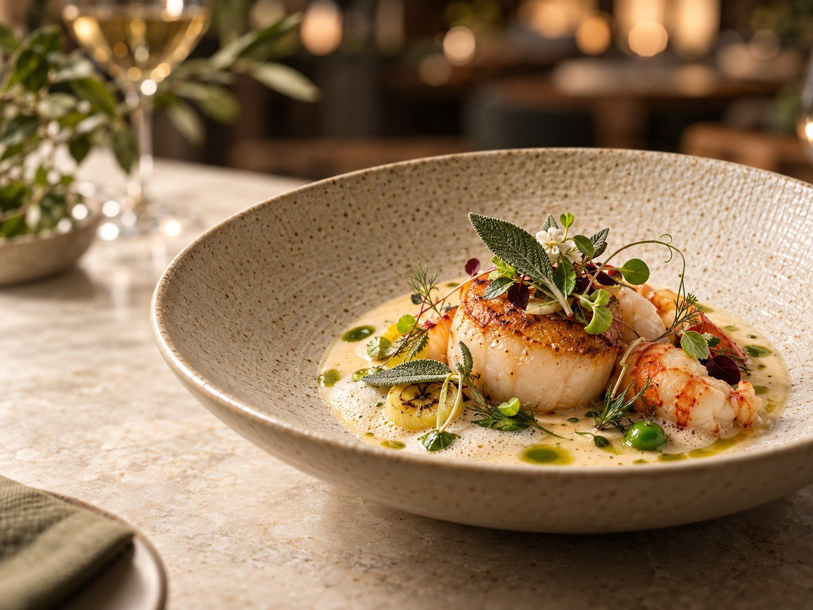
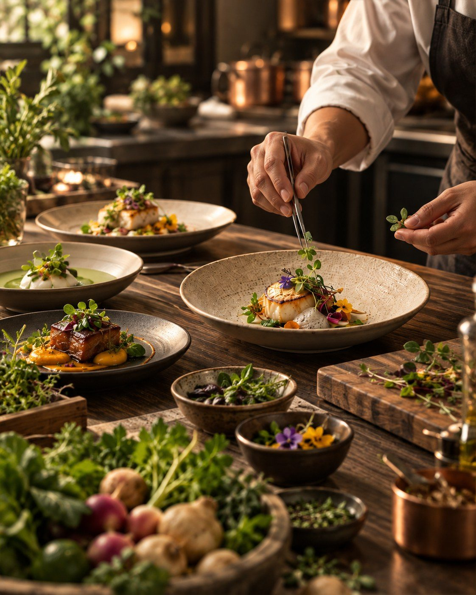
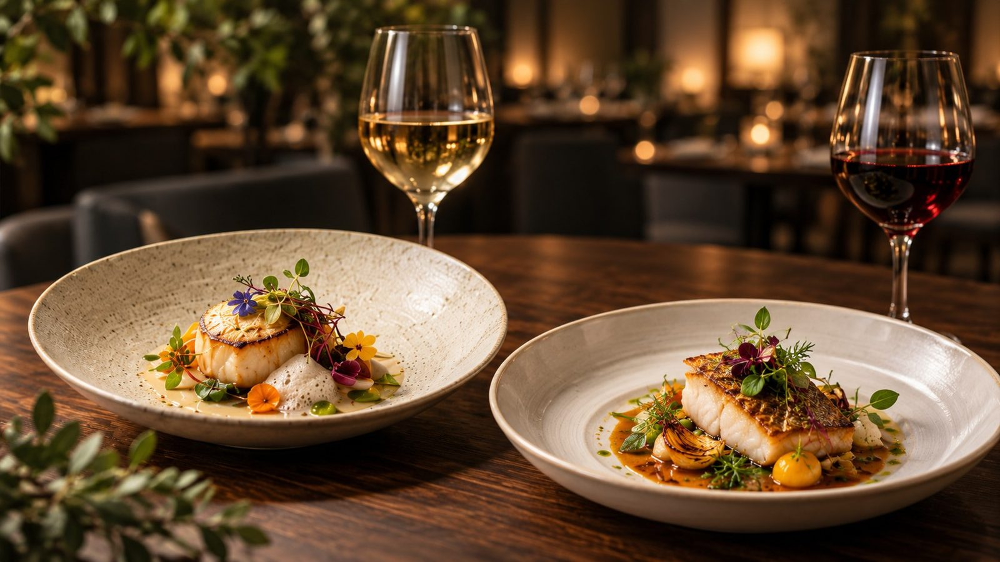

Thực đơn hiện tại
Thực đơn 9 món theo mùa
Hành trình bắt đầu bằng những vị thanh nhẹ, đi qua rau củ và hải sản, tiến đến món chính có tầng vị sâu hơn rồi kết thúc bằng món ngọt tiết chế.
Hương vị được kể bằng nguyên liệu, kết cấu và mùa
Các món minh họa tinh thần trình bày hiện tại của MỘC TABLE. Thành phần món ăn có thể thay đổi để phù hợp với chất lượng nguyên liệu theo ngày.
Trước khi dùng bữa
Những điều cần biết trước một buổi tasting menu
Thực đơn được phục vụ theo một trình tự cố định để giữ nhịp hương vị. Đội ngũ có thể ghi nhận một số yêu cầu ăn uống trước buổi dùng bữa.
Chọn ngày dùng bữaThông tin thực đơn
| Số món | 9 món theo mùa |
|---|---|
| Thời lượng dự kiến | Khoảng 120-150 phút |
| Khung phục vụ | 18:00 · 18:30 · 19:00 · 19:30 · 20:00 · 20:30 |
| Phối rượu | Tùy chọn phối rượu theo thực đơn |
| Yêu cầu ăn uống | Cần thông báo trước khi xác nhận bàn |
Điểm nhấn của mùa
Tạo lớp hương xanh, giúp cân bằng các thành phần béo, nướng và sốt đậm trong thực đơn.
Nguồn rau củ thay đổi theo thời điểm thu hoạch để ưu tiên độ tươi, kết cấu và hương vị tự nhiên.

Nguồn nguyên liệu
Từ vùng nguyên liệu đến từng lớp vị trên đĩa
Mỗi mùa bắt đầu bằng việc đội bếp khảo sát những nguyên liệu đang đạt chất lượng tốt, sau đó thử nhiều phương pháp chế biến để tìm cấu trúc phù hợp nhất.
Chọn ngày thưởng thứcNguồn gốc rõ ràng
Ưu tiên nguyên liệu có vùng trồng, vùng đánh bắt hoặc nhà cung cấp được xác định cụ thể.
Kỹ thuật phục vụ nguyên liệu
Nướng, áp chảo, lên men hoặc xử lý lạnh chỉ được dùng khi giúp làm rõ đặc tính vốn có của nguyên liệu.
Thay đổi theo mùa
Một số món và thành phần được cập nhật khi chất lượng nguyên liệu chuyển sang giai đoạn mùa vụ khác.

Thực đơn mùa này chỉ phục vụ trong một khoảng thời gian giới hạn
Chọn ngày, khung giờ và loại bàn. Mục thực đơn sẽ được điền sẵn để đội ngũ chuẩn bị đúng trải nghiệm.
Chọn ngày dùng bữa